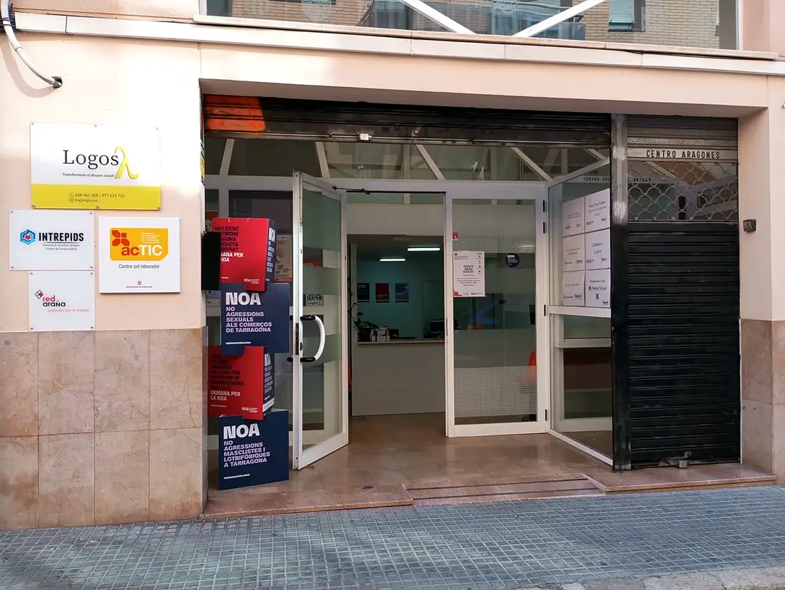

Contacta con nosotros
¿Hablamos?
Cuéntanos qué te interesa, qué puedes aportar o cuál es tu propuesta. Revisaremos la consulta y te responderemos.
Dónde estamos
Nos encontraréis en Tarragona
C/ de la Pau del Protectorat, 14
43004 Tarragona
Petit Lleure durante el curso
Abrir en Google MapsLunes y miércolesgrupo de 3 a 6 años · 17–19:30 h
Martes y juevesgrupo de 7 a 13 años · 17–19:30 h

Así es la entrada · Pau del Protectorat, 14